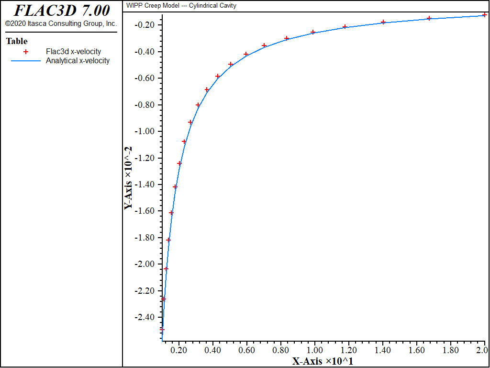
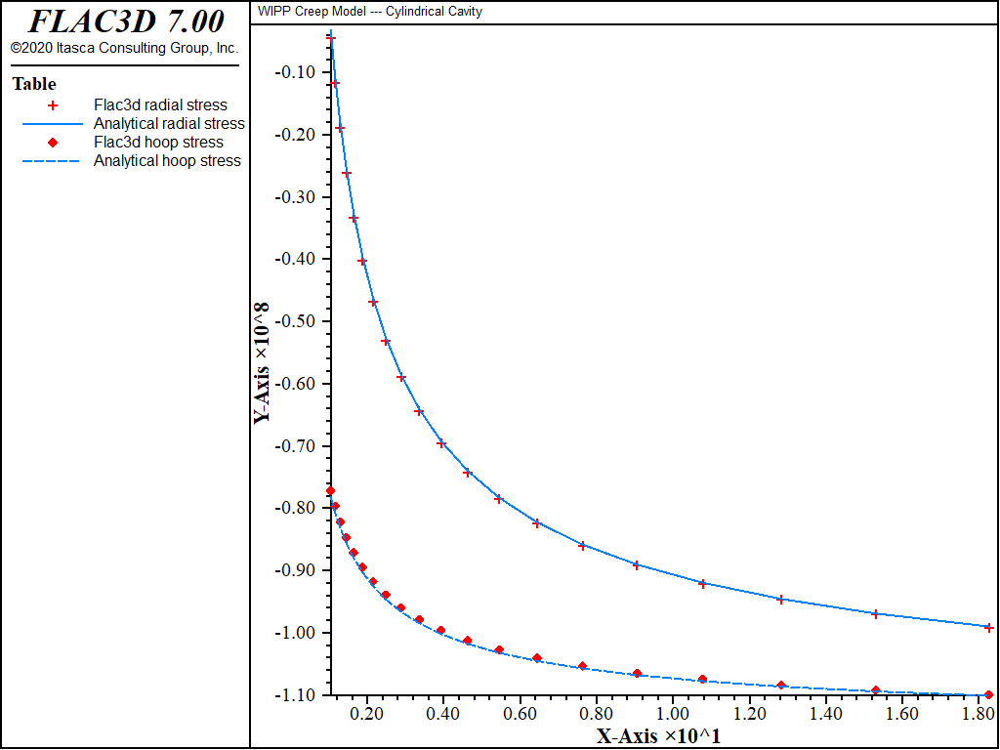

WIPP 模型：圆柱空腔
注意
要在 FLAC3D 中查看此项目，请使用菜单命令 。 选择“Creep/CylindricalCavityWIPP”并选择“CylindricalCavityWIPP.f3dprj”以加载。 该项目的主数据文件见本示例末尾（main data files）。
FLAC3D 中的WIPP 参考蠕变模型（WIPP-reference creep model）用于求解承受外表面压力的无限长厚壁圆柱的径向 蠕变问题。 假定蠕变由单分量幂律描述时的解析稳态解 见 幂律模型：圆柱空腔（Power Model: Cylindrical Cavity）。通过仅使用二次蠕变应变分量，可将 WIPP 模型 转换为幂律形式。这可以通过将 WIPP 特性 a _wipp 和 b _wipp 设为零来实现。WIPP 模型于是 简化为如下形式
其中 \(A = D \exp(-Q/RT)\)。
对于该问题，\(Q\) = 12,000 cal/mol，\(R\) = 1.987 cal/mol K，\(T\) = 300° K，\(D\) = 5.5299 × 10-17（或 \(A\) = 1 × 10-25 Pa-3 yr-1），且 \(n\) = 3。材料的弹性特性为 \(E\) = 820 MPa 和 \(\nu\) = 0.3636。
该模型使用与 幂律模型：圆柱空腔（Power Model: Cylindrical Cavity）中所述相同的 FLAC3D 网格和相同的边界条件。
本示例的结果汇总于 图 1（Figure 1） 和 图 2（Figure 2）。 图 1（Figure 1） 比较了稳态条件下径向速度的解析解与 FLAC3D 结果。 图 2（Figure 2） 给出了径向应力和环向应力的比较。 结果之间的一致程度与 幂律模型：圆柱空腔（Power Model: Cylindrical Cavity） 中的幂律试验相似。


图 1：稳态时径向速度的比较——FLAC3D WIPP 模型（符号）、解析解（线）与径向距离的关系。


图 2：稳态时径向应力和环向应力的比较——FLAC3D WIPP 模型径向应力（符号）、解析径向应力（线）、FLAC3D WIPP 模型环向应力（符号）、解析环向应力（线）与径向距离的关系。
数据文件
;------------------------------------------------------------
; 圆柱形空腔——WIPP 模型
;-------------------------------------------------------------------
model new
model large-strain off
fish automatic-create off
model title "WIPP Creep Model --- Cylindrical Cavity"
model configure creep
;
zone create brick point 0 1 0 0 point 1 20 0 0 ...
point 3 0.98769 0.15643 0 point 6 19.754 3.129 0 ...
point 2 1 0 -1 point 4 20 0 -1 ...
point 5 0.98769 0.15643 -1 point 7 19.754 3.129 -1 ...
size 20 1 1 ratio 1.2 1 1
zone face skin
zone cmodel wipp
; 属性和应力采用帕斯卡单位（非 MPa）
zone property bulk=1e9 shear=3e8
zone property constant-gas 1.987 activation-energy 12e3 exponent 3 ...
constant-d 5.5299e-17
zone property constant-a 0 constant-b 0 creep-rate-critical 5.39e-8 ...
temperature 300
;
zone gridpoint fix velocity-y range position-y 0
zone gridpoint fix velocity-z range position-y 0
zone face apply velocity-normal 0 range group 'North'
zone face apply velocity-dip 0 range group 'North'
zone face apply stress-normal -100e6 range group 'East'
zone initialize stress xx -100e6 yy -100e6 zz -100e6
;
model step 2000
model save 'cyl_wl'
;
model history mechanical unbalanced-maximum
zone history velocity-x gridpointid 1
zone history velocity-x gridpointid 81
zone history displacement-x gridpointid 1
zone history displacement-x gridpointid 81
zone history stress-xx gridpointid 1
zone history stress-yy gridpointid 1
zone history stress-zz gridpointid 1
model history creep time-total
model history timestep
;
zone gridpoint initialize velocity (0,0,0)
model creep active on
model creep timestep starting 1.0e-3
model creep timestep minimum 1.0e-4
model creep timestep maximum 1.0
model solve time-total 2000
model save 'cyl_w2'
; 与解析解比较……
program call 'solution' suppress
table '1' label 'Flac3d x-velocity'
table '11' label 'Analytical x-velocity'
table '2' label 'Flac3d radial stress'
table '12' label 'Analytical radial stress'
table '3' label 'Flac3d hoop stress'
table '13' label 'Analytical hoop stress'
model save 'cylindrical-cavity-wipp'
| 这些内容对您有帮助吗？… | FLAC3D © 2019, Itasca | 原文更新于 2020 年 10 月 8 日 |
| 版权与免责声明 | ||